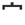

KANJIDAMAGE
KANJIDAMAGE
What are the most useful radicals?
Good question! Remember, in Japanese, radicals are like the letters of the alphabet, and kanji are like words. So, keeping that in mind, I'd say that the most common radicals are the ones which wind up inside the largest number of kanji. And the most useful radicals are the ones which are used in the most useful kanji. Unlike other kanji sites, Kanjidamage ranks kanji by usefulness, and we keep track of exactly how many useful kanji use each radical.
So just by learning one really useful radical, you can learn the left-side (or bottom-side or top-side) of up to 99 other kanji - basically without any extra effort. Without any further ado:
| Radical | Number of kanji with radical | The most useful kanji it is used in |
|---|---|---|
| 水 | 98 | 酒 (liquor) 満 (full) 活 (vivid, lively) 洗 (wash) 漢 (Chinese) |
| 口 | 97 | 日 (sun, day) 可 (possible) 古 (old) 言 (say) 名 (name, famous) |
| 木 | 86 | 新 (new) 休 (rest) 楽 (enjoy) 禁 (prohibition) 本 (book / the real) |
| 人 | 82 | 火 (fire) 信 (believe) 何 (what?!?) 内 (the inside) 夜 (late night) |
| 手 | 68 | 持 (hold) 払 (pay) 指 (finger / point at) 排 (eliminate) 押 (push) |
| 心 | 67 | 心 (heart) 怒 (get mad) 必 (surely) 思 (think) 忘 (forget) |
| 言 | 54 | 話 (conversation) 誰 (who??) 信 (believe) 読 (read) 訳 (reason / translation) |
| 日 | 50 | 音 (sound) 間 (a period of time) 明 (bright) 白 (white) 最 (most) |
| 糸 | 49 | 緒 (together) 続 (continue) 約 (promise/ roughly speaking) 終 (end) 紙 (paper) |
| 月 | 48 | 服 (clothes) 前 (before) 明 (bright) 青 (blue) 朝 (morning) |
| 一 | 48 | 酒 (liquor) 不 (un) 七 (seven) 子 (child) 言 (say) |
| 土 | 43 | 書 (write) 走 (run) 社 (company) 赤 (red) 座 (sit) |
 |
38 | 達 (plural/delivery) 遅 (slow / late) 近 (near) 違 (different and therefore wrong) 過 (surpass / too much) |
| 刀 | 37 | 力 (strong) 切 (cut / important) 分 (understand / divide / minute) 初 (first time) 利 (handy) |
| 花 | 37 | 夢 (dream) 満 (full) 花 (flower) 落 (fall,drop) 英 (heroic) |
|  | 37 | 寝 (go to bed) 定 (plan) 字 (letter) 実 (truth) 家 (home) |
| 十 | 35 | 千 (thousand) 去 (past tense) 古 (old) 酔 (drunk) 支 (support) |
| 貝 | 32 | 頭 (head) 負 (lose) 買 (buy) 販 (transaction) 質 (quality) |
| 女 | 31 | 娘 (daughter) 要 (important) 好 (like) 数 (integer, to count) 嫌 (eww!!) |
 |
30 | 階 (story of a building) 邪 (heresy) 降 (descend /rainfall / get out of vehicle ) 陰 (shady) 隠 (hide) |